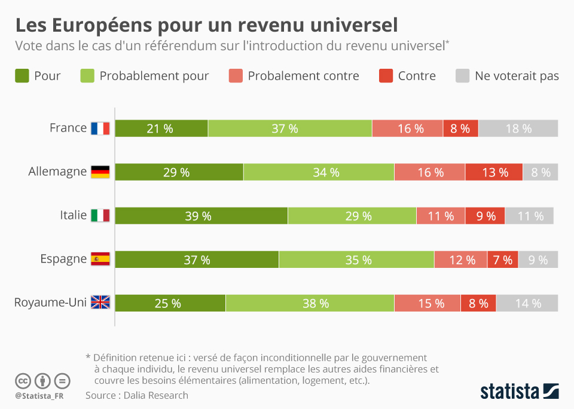
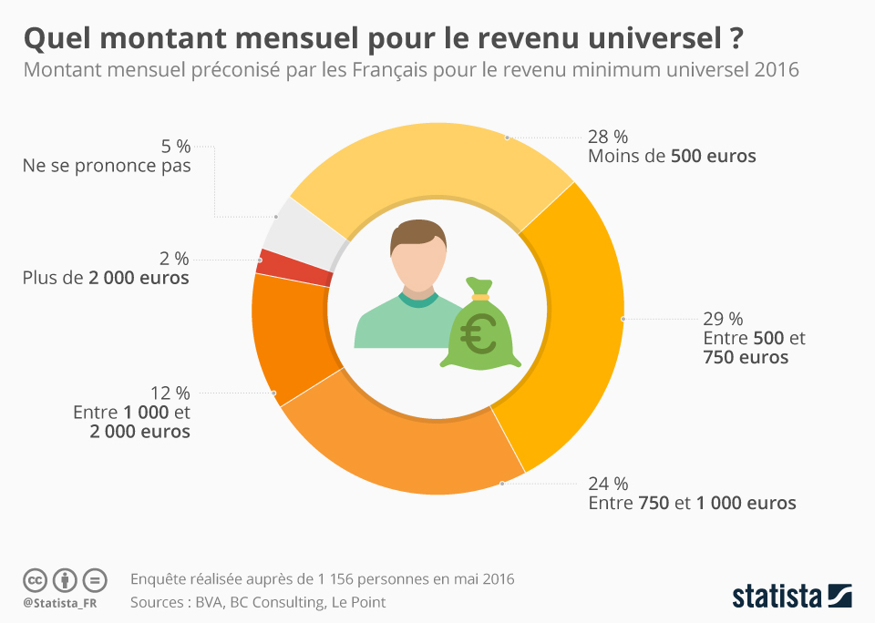

En France, et dans le monde, le sujet du revenu universel est installé dans le débat public, opposant nettement ceux qui pensent que l’objectif du revenu universel est de rationaliser les systèmes d’aide sociale en se substituant à l’ensemble des prestations existantes, et ceux qui voient l’allocation universelle comme un outil donnant aux individus les moyens de se prendre en charge dans la dignité, sans pour autant remettre en cause les prestations sociales en vigueur.
Pour le revenu universel :
En France, les prestations visant à lutter contre la pauvreté et l’exclusion représentent 24 milliards d’euros, et sont complétées par les aides au logement (18 milliards d’euros) et les prestations familiales (54,1 milliards d’euros). Ces dépenses sont loin d’être inutiles, puisque parmi les pays d’Europe, la France obtient des résultats significatifs en matière de lutte contre la pauvreté ( en 2014, avec un taux de pauvreté situé à 60% du revenu médian, la France se situe à 13,3% contre 17,2% dans l’ensemble de l’Union européenne). Toutefois, la persistance d’une situation dans laquelle 8,8 millions de personnes disposent de moins de 1000 euros par mois conduit à s’interroger sur la nécessité d’une réforme des dispositifs de lutte contre la pauvreté. Il existe un certain nombre de propositions pour améliorer la lutte contre la pauvreté et parmi elles, l’attribution d’un revenu de base semble la plus ambitieuse. Versé à tous, le RU pourrait non seulement lutter contre la pauvreté et ainsi favoriser l’égalité mais aussi la liberté en offrant la possibilité de travailler davantage pour augmenter son revenu ou alors de ne tout simplement pas travailler ce qui permettrait par exemple de développer le bénévolat.
La question du RU crée donc beaucoup de débats chez ses partisans:
- Faut-il que les citoyens reçoivent le RU quel que soit leur âge tout au long de leur vie ou seulement les adultes ?
- Le montant du RU doit-il être élevé pour que les citoyens aient le choix de travailler ? ou doit-il être plus bas (au niveau du RSA) pour décourager et éviter l'inactivité ?
- Faut-il supprimer les allocations et prestations sociales afin de compenser le financement du RU ? ou faut-il garder ces dernières et augmenter les impôts à la place ?
- Faut-il supprimer le SMIC avec l’instauration du RU ? ou faut-il que le RU s’ajoute au SMIC afin d'augmenter le pouvoir d’achat ?t
- etc...
Plusieurs visions du RU existent alors au sein de ses partisans, parmi elles on retrouve principalement:
Dans cette approche, le revenu de base a pour finalité de libérer l’individu de la tutelle de l’Etat. Il est vu comme un instrument favorisant la liberté individuelle, chacun bénéficiant d’un revenu lui permettant de subvenir à ses besoins familiaux. Cette vision a été d’abord proposée par Milton Friedman (Capitalisme et liberté, 1962) avec l’idée d’un impôt sur le revenu négatif dont le principe est assez simple : le revenu d’un foyer étant imposable à partir d’un certain seuil, Friedman propose un « crédit d’impôt » sur la différence entre le revenu effectivement gagné par le foyer et le seuil qui se trouve au-dessus. Par exemple, si le revenu à partir duquel le foyer est imposable est de 20000 euros et que le foyer gagne 15000 euros, le ménage en question recevra un impôt négatif auquel on applique un certain taux. Si le taux est de 50%, dans cet exemple, l’impôt négatif sera de 2500 euros (50% de 5000 euros). L’impôt négatif est nommé de la sorte car c’est une sorte de miroir de l’impôt « positif ». La mesure proposée par Friedman est cependant assez éloignée du revenu universel à proprement parler : elle poursuit avant tout plusieurs objectifs qui sont d’aider les pauvres à sortir de la pauvreté en préservant leur dignité (en évitant les nombreuses démarches et justifications nécessaires pour obtenir de l’aide), à mettre fin aux trappes à pauvreté qui sont créées par la multiplicité des aides et prestations diverses, et aussi à limiter l’expansion de la bureaucratie de la redistribution.
Les partisans de cette approche voient l’allocation universelle à la fois comme un instrument donnant aux individus les moyens de se prendre en charge, et permettant aussi d’inciter au développement d’activités non-marchandes, associatives, culturelles ou citoyennes. C’est la perspective adoptée par la fondation Jean Jaurès (Groupe de travail « revenu universel de la fondation Jean Jaurès, Le revenu de base, de l’utopie à la réalité, mai 2016) qui propose une vision social-démocrate du revenu universel qui entend « assurer à tous les conditions d’une émancipation et d’une vie digne », se différenciant à la fois de la vision libérale évoquée plus haut qui envisage avant tout le revenu de base comme un transfert de responsabilité de l’Etat vers les individus, et de la vision marxiste qui conçoit le revenu de base comme un instrument de sortie du capitalisme productiviste, voire du salariat. Dans la perspective social-démocrate, le revenu de base est un moyen d’assurer la subsistance de chacun, mais également de renforcer le lien social en repensant la place du travail dans nos sociétés pour encourager l’émergence de nouvelles activités, productives ou non. Cette déconnexion du travail et du revenu devrait permettre en effet de favoriser l’engagement associatif et le bénévolat. C’est aussi la position du philosophe Philippe Van Parijs qui ne borne pas la création du revenu de base à la lutte contre la pauvreté monétaire : pour lui, il s’agit de donner aux individus une liberté réelle de choisir un emploi permettant leur épanouissement. Pour d’autres auteurs, plus proches du marxisme, le revenu de base s’inscrit même dans une perspective de décroissance économique, c’est-à-dire de réduction de l’activité productive et de la consommation, en permettant de mieux partager le travail et de valoriser d’autres formes de participation à la vie sociale.
Contre le revenu universel :
Les campagnes pour le RU ont été fréquentes ces dernières années, mais l'idée a généralement été rejetée. En 2016, par exemple, les électeurs suisses ont rejeté les propositions pour le RU lors d'un référendum. Si elles avaient été adoptées, elles auraient vu tous les citoyens suisses recevoir un paiement annuel garanti, quel que soit leur statut professionnel. Les parties opposées au RU ont fait valoir que cela nuirait à l’économie en supprimant la motivation des gens à travailler et en encourageant une immigration excessive. La même année, le gouvernement britannique a exclu le programme comme étant inabordable Selon les résultats définitifs du référendum, 76,9 % des électeurs ont dit non à ce projet controversé.
Ralph Kundig, l’un des pères de l’initiative, explique que « C’est un rêve qui existe depuis longtemps », mais qui était devenu « indispensable » face au chômage élevé provoqué par la robotisation croissante. « Verser un RU à chacun, c’est reconnaitre la nécessité et l’utilité de beaucoup d’activités qui ne se vendent pas. C’est reconnaitre que le travail bien fait, l’innovation, la créativité ont besoin de temps et d’argent pour se développer », revendique le collectif Génération RBI promouvant l’initiative en Romandie.
Le gouvernement et la plupart des partis politiques dénonçaient un projet utopique et trop coûteux. « C’est un vieux rêve, un peu marxiste, plein de bons sentiments irréfutables, mais sans réflexion économique », avait déclaré à l’Agence France-Presse le directeur du Centre international d’études monétaires et bancaires à Genève, Charles Wyplosz. Pour lui, pas de doute, si le lien entre la rémunération et le travail était coupé, « les gens en feraient moins ».
Quelques chiffres
 Source : Statista
Selon une étude menée par Dalia Research, 58 % des Français voteraient « pour » ou « probablement pour » si un référendum proposant l’introduction du revenu universel était organisé. Mais si une majorité est séduite par l’idée, les Français sont relativement moins enthousiastes que leurs voisins : 63 % des Allemands ou encore 72 % des Espagnols y sont favorables.
 Source : StatistaSelon une étude de BVA et Le Point menée en mai 2016, 28 % des sondés pensent que le RU devrait être de moins 500 euros par mois, 29% entre 500 et 750 euros par mois, 24 % entre 750 et 1000 euros par mois, 12% entre 1000 et 2000 euros par mois et 2% plus de 2000 euros (5% ne se prononce pas). On assiste ainsi à des résultats très serrés avec le montant du RU qui devrait osciller entre 500 et 1000 euros selon les sondés (les 28%, 29% et 24% étant proches de quelques points de pourcentage) Cela illustre bien le débat que le RU engendre.